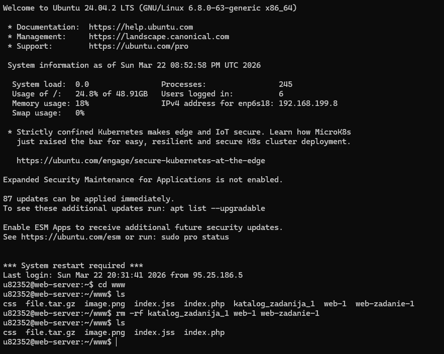
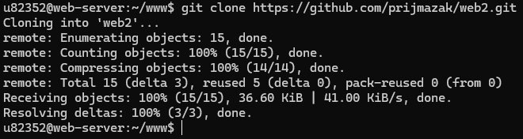
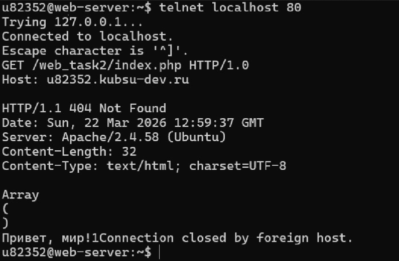
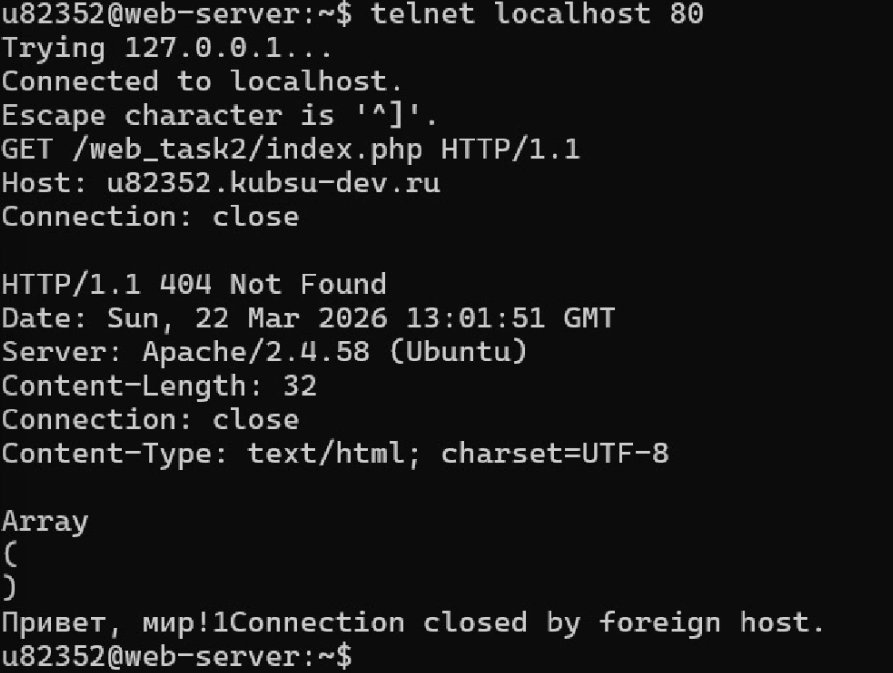
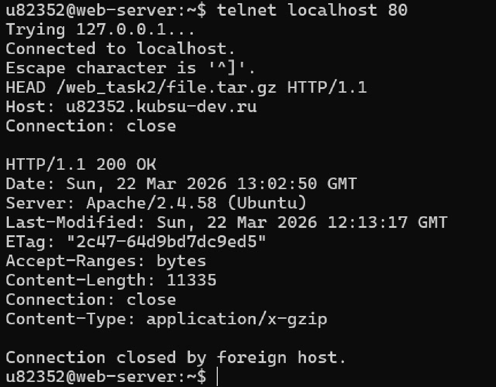
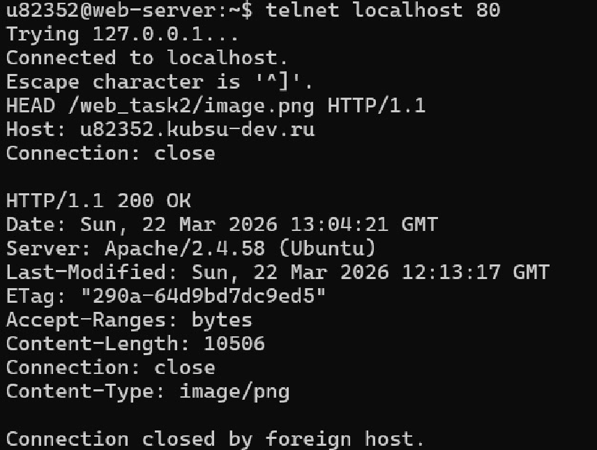
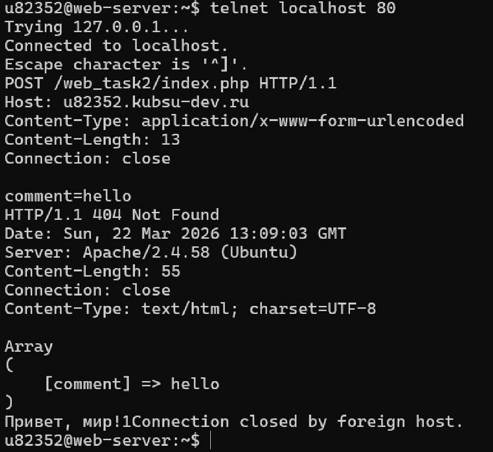
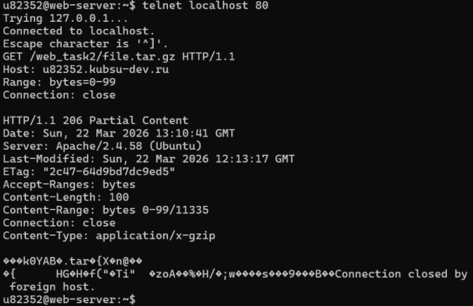
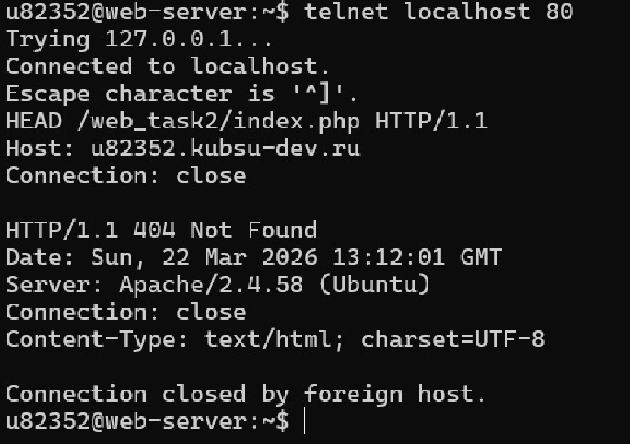

Домен: http://u82352.kubsu-dev.ru/web-2/
GitHub: https://github.com/PrijmaZak/web-2
Необходимые для работы файлы (index.php, архив, изображения) загружены на сервер через GitHub. Проект развернут в каталоге /www/web_task2. Факт успешного размещения подтвержден — файлы доступны по ссылкам учебного домена и корректно отображаются в браузере.


Отправлен классический GET-запрос по протоколу HTTP 1.0 на корневой путь.

Выполнен GET-запрос по протоколу HTTP 1.1 с указанием хоста.

Использован метод HEAD для получения заголовка Content-Length без скачивания файла.

Через метод HEAD получен заголовок Content-Type, показывающий тип содержимого.

Отправлен POST-запрос с параметром comment. Сервер обработал данные и вернул ответ.

Использован заголовок Range: bytes=0-99 для частичной загрузки файла.

Через метод HEAD получена информация о charset в заголовке Content-Type.
